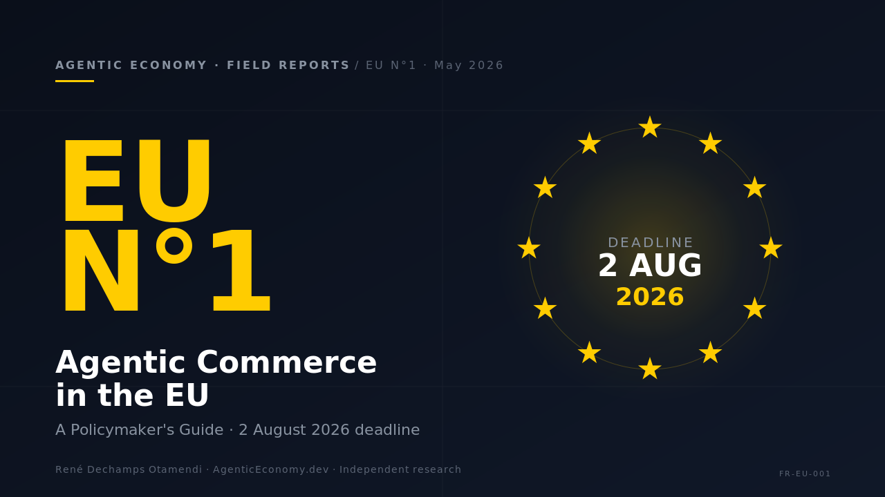

Agentic Commerce in the EU
A Policymaker's Guide. Six steps. Three gaps. One deadline: 2 August 2026.
What this is
In seventy days, the EU AI Act enters its applicability phase. Article 50 transparency obligations, Annex III high-risk classifications, and the full Title III stack land on 2 August 2026. And most of the agent-to-agent commerce being built right now sits in a regulatory zone the AI Act doesn't actually cover end-to-end.
This Field Report is the operating manual for the people who need to know — concretely — what Brussels has, what's missing, and where the consultation windows still are. It is written for EU policymakers, MEP staffers, in-house counsel at AI and fintech companies, and builders shipping agent features into the European market.
The AI Act is the floor of the regulatory stack for agentic commerce. It is not the ceiling. The report walks the six-step lifecycle of an agentic EU transaction, names the dominant European instrument at each step, and unpacks the gaps the AI Act does not close — the agent-to-agent disclosure vacuum under Article 50, Strong Customer Authentication that breaks down when the counterparty is software, and mandate granularity under GDPR Article 22 with no implementation standard for agent commerce.
Video summary & audio companion
Also on Apple Podcasts, Spotify, and the @agenticeconomy Captivate feed.
The lifecycle of an EU agentic transaction
![The Lifecycle of an EU Agentic Transaction — six panels: (1) Principal establishing the mandate (GDPR Art. 22), (2) Software Agent applying AI Act risk tiering (Tier 2 mortgage decisions vs Tier 3 booking flights), (3) Venue governed by DSA and DMA, (4) Payment Rail under PSD3, SEPA Instant, MiCA with SCA, (5) Finality and settlement neutrality, (6) Record providing GDPR Art. 15 audit trail. Three footer callouts: the AI Act is the floor not the ceiling, August 2026 critical deadline, agent-to-agent disclosure vacuum under Article 50.](/field-report-eu-001-infographic.png)
Key findings
- The AI Act is the regulatory floor, not the ceiling. It governs the agent's "brain" via risk tiering, but other instruments (GDPR, PSD3, MiCA, eIDAS 2.0, DSA, DMA) govern what happens when the agent interacts with venues, payment rails, and identity infrastructure.
- Three structural gaps the AI Act does not close. The agent-to-agent disclosure vacuum under Article 50, Strong Customer Authentication that breaks down when the counterparty is software, and the absence of an implementation standard for mandate granularity under GDPR Art. 22.
- No single regulator owns the agentic commerce stack. DG CNECT owns the AI Act and digital services. DG FISMA owns financial rails. The EDPB owns GDPR. The AI Office is the new institutional vehicle for the AI Act, not for the transversals. This is not a complaint — it is a fact that determines how the policy work must be done.
- Open consultation window. The AI Office consultation on Article 50 implementing guidelines closes 3 June 2026. The agent-to-agent disclosure question is the principal item the guidelines could clarify.
How to use this report
The report is structured as a desk reference, not a linear argument. Part I introduces the six-step lifecycle. Part II walks each step in turn and names the dominant EU instrument. Part III analyses the AI Act timeline (2024–2027) and the three gaps. Part IV introduces the transversals matrix — how DSA, DMA, GDPR, PSD3, MiCA, and eIDAS 2.0 each cover only a slice of the stack. Part V is a reading list and a defensive build checklist for the window before 2 August 2026.
If you are an MEP staffer working on the AI Act file, start with Part III and the transversals matrix. If you are in-house counsel at a company shipping agent features, start with the defensive build checklist in Part V. If you are a journalist covering EU digital policy, the executive summary and the three-gap analysis in Part III give you the framing you need.
Why this matters in practice
For policymakers, the diagnostic identifies which specific articles of which specific instruments need clarification before 2 August 2026 — and which need to wait for case-law accumulation. The Article 50 consultation closing on 3 June is the most immediate window; SCA reform under PSD3 negotiations is the medium-term one.
For builders, the defensive build checklist is the part to read first. The report is not legal advice and does not substitute for in-house counsel, but it does name the standards-of-the-art that an operator can plausibly point to if challenged on agent-to-agent disclosure, mandate revocability, and authentication when the counterparty is software.
For everyone else, the report makes the implicit explicit: the AI Act covers the agent, but agentic commerce happens at the points where the agent meets the world. Those points are governed by other rules — and those rules were written before agents existed.
Frequently asked questions
What is the 2 August 2026 deadline?
The EU AI Act (Regulation (EU) 2024/1689) reaches its general applicability date on 2 August 2026, twenty-four months after entry into force. Article 50 transparency obligations, Annex III high-risk classifications, and the full Title III provider/deployer stack apply from that date. Article 113(c) defers high-risk AI in regulated products by twelve more months.
Is this an official EU document?
No. This is an independent policy brief published by AgenticEconomy.dev under CC BY-SA 4.0. It is not a publication of the European Union, the European Commission, the AI Office, or any EU institution. References to EU legislation are made under fair use for the purpose of independent analysis.
Why call it a Field Report and not a paper?
Field Reports are a separate editorial series from the AgenticEconomy.dev research preprints. Preprints are formal research with methodology and citations; Field Reports are tactical, dated, regulatory-focused documents written for decision support. This is the first entry in the Field Reports series.
What is the agent-to-agent disclosure vacuum?
AI Act Article 50 requires AI systems to disclose themselves to humans they interact with. The article does not address the case where one AI agent transacts with another AI agent with no human in the loop. The AI Office consultation on Article 50 implementing guidelines closes on 3 June 2026; this report identifies the agent-to-agent case as the principal item the guidelines could clarify.
Who should read this?
EU policymakers, MEP staffers, in-house counsel at AI and fintech companies, and builders shipping agent features into the European market. The report is structured as a desk reference: a six-step lifecycle, a transversals coverage matrix, a reading list, and a defensive build checklist.
Cite this Field Report
@techreport{dechamps2026eu001,
author = {Dechamps Otamendi, Ren\'{e}},
title = {Agentic Commerce in the EU: A Policymaker's Guide},
year = {2026},
month = may,
number = {EU Field Report N\textsuperscript{o}1},
institution = {AgenticEconomy.dev},
doi = {10.5281/zenodo.20265603},
url = {https://doi.org/10.5281/zenodo.20265603},
note = {Independent policy brief. Version 1.0. CC BY-SA 4.0.}
}